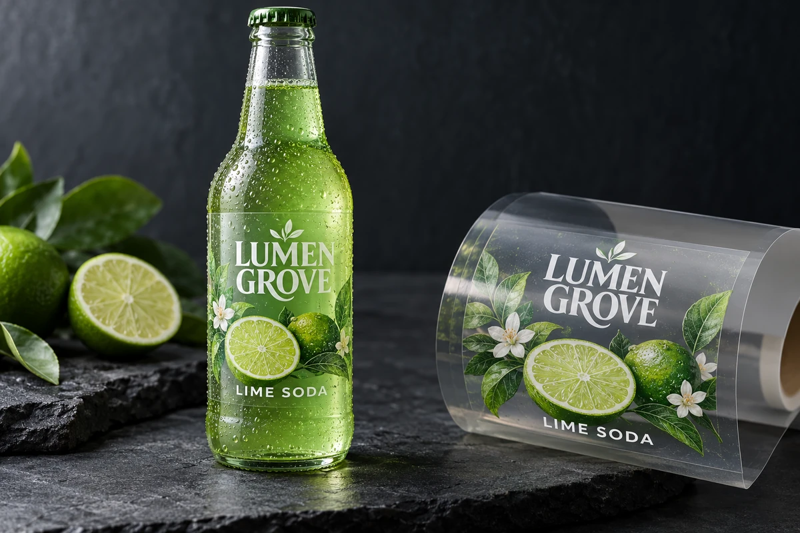

White lettering looks clear in the design window, but a production preview can treat it differently. On a transparent or colored label, the word white might describe an unprinted area, a spot-white ink layer or an object whose overprint setting was inherited accidentally.
Define what each white element is supposed to print, then check the exported production file with the printer's agreed preview and separation method. A screenshot of the artwork does not establish how its color objects will behave in output.

Identify the intended white effect
Start with the physical construction. On white stock, an unprinted area can expose the white face material. On clear film, leaving an area unprinted can expose the bottle or product behind it. A printed opaque-white layer is another production element with its own defined area and settings.
The clear-versus-white BOPP guide maps those background choices. This preflight decision concerns the file instructions that implement them, particularly when a designer or printer revises the artwork.
Ask the printer to identify its required spot-white naming, layer and output conventions. Different workflows can use different conventions. Do not rename a swatch or set overprint across the whole file because a generic tutorial used that method.
Separate process white from an intentional spot-white layer
Adobe's white-overprint guidance describes the problem of white objects acquiring overprint attributes and distinguishes spot-white objects. Use that distinction to frame a file review, not to justify a blanket operation on every white object.
An intended knockout and an intentional white-ink separation need different interpretation. Confirm which object is meant to reveal the stock, which should print white and which is a finishing or cut guide that should not print at all.
Keep the designer and prepress operator responsible for their respective checks. A buyer can request a documented review and approve visible content without pretending to validate technical output settings it cannot inspect.
Build a white-object approval checklist
| Object or area | Intended physical result | File/output confirmation |
|---|---|---|
| White brand lettering | Stock showing or printed white, explicitly stated | Object color and agreed overprint/knockout behavior |
| White underbase | Defined opacity area behind selected colors | Named spot separation and mask revision |
| Transparent window | Container or product remains visible | No unintended white or color object in the window |
| Fine white details | Intended readable or decorative feature | Relevant production-material sample if needed |
| Cut/finish guides | Technical instruction only | Correct nonprinting or separate output treatment |
| Exported PDF | Same intended result as approved design | Agreed preview and separation check |
Record the production file revision, reviewer and unresolved output question. The checklist is an editorial preflight aid, not a complete press specification or a promise that every fine detail can be reproduced.
Review the actual exported file
Keep the source design and exported PDF identifiable. Ask the printer to check the file that will enter its production workflow, rather than an earlier attachment or a raster image prepared for marketing.
Review the separations relevant to the intended result. If the workflow uses a named white plate, verify the agreed mask with the printer. Where an ordinary white object is intended to knock out, confirm that its attributes do not create an unintended output result.
The artwork handoff guide helps keep dependencies and revisions together. It is especially useful when several people exchange files through messages and a corrected PDF can easily be confused with the earlier proof.
Check the label on its real background
A technical preview can establish a file property without establishing final appearance on a filled bottle. Clear film, white ink, colored printing and the product behind them interact visually. Use a suitable physical sample where opacity, contrast or fine reversed text matters to the approval.
The white-ink guide for dark bottles addresses that physical appearance decision. Keep it separate from file preflight: a readable mockup does not prove the separation is correct, and a correct separation does not automatically approve the physical appearance.
For a hypothetical lime-drink bottle, the brand may want white lettering while leaving a narrow clear window. The file review needs to preserve both instructions. Flooding the entire label with white might solve one visibility issue while removing the intended transparent effect.
Recheck after revisions and conversions
A revised logo, copied object or file conversion can change attributes even when the designer intended only a small visual edit. Ask which preflight checks are repeated after such changes and keep the resulting file revision in the approval record.
Do not assume that outlining text or flattening an image solves every output issue. Those operations can introduce other dependencies or alter editability. Let the responsible prepress workflow determine the required production preparation.
When the printer returns an amended file, compare the actual changes and obtain the relevant content or appearance approval again where needed. A technically corrected file should not silently alter approved wording or label dimensions.
Release a result the parties can identify
The final approval should name the PDF revision, white-layer or mask reference and the physical evidence used for appearance. State any remaining question that prevents production release. Avoid a broad looks good message whose attachment and approval scope are unclear.
Request a white-layer artwork review with the container photo, clear or white stock direction, intended transparent areas and current production PDF. Mark which objects should print white and which should expose the background. The form opens an email draft; review it and attach files through email or the listed WhatsApp channel.